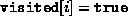
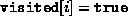

Data Structures and Algorithms
with Object-Oriented Design Patterns in C++
Data Structures and Algorithms
with Object-Oriented Design Patterns in C++
Program  gives the code for the two DepthFirstTraversal
routines of the Graph class.
One of them accepts two arguments, the other, three.
As indicated in Program ,
the two-argument routine is declared public
whereas the three-argument one is protected.
gives the code for the two DepthFirstTraversal
routines of the Graph class.
One of them accepts two arguments, the other, three.
As indicated in Program ,
the two-argument routine is declared public
whereas the three-argument one is protected.
The user of the Graph class only sees the two-argument DepthFirstTraversal routine. This routine takes a reference to a Visitor instance and a reference to a Vertex instance. The idea is that the Visit function of the visitor is called once for each vertex in the graph and the vertices are visited in depth-first traversal order starting from the specified vertex.

Program: Graph Class DepthFirstTraversal Member Function Definition
In order to ensure that each vertex is visited at most once,
an array of length  of Boolean values
called visited is used (line 4).
I.e.,  only if vertex i has been visited.
All the array elements are initially false (lines 5-6).
After initializing the array,
the two-argument routine calls the three-argument one,
passing it a reference to the array as the third argument.
of Boolean values
called visited is used (line 4).
I.e.,  only if vertex i has been visited.
All the array elements are initially false (lines 5-6).
After initializing the array,
the two-argument routine calls the three-argument one,
passing it a reference to the array as the third argument.
The three-argument routine returns immediately if the visitor is done. Otherwise, it visits the specified node, and then it follows all the edges emanating from that node and recursively visits the adjacent vertices if those vertices have not already been visited.
 Copyright © 1997 by Bruno R. Preiss, P.Eng. All rights reserved.
Copyright © 1997 by Bruno R. Preiss, P.Eng. All rights reserved.